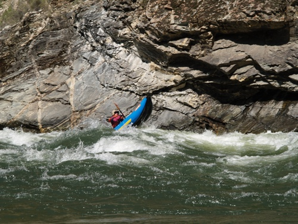

White Water Rafting
White water rafting is a thrilling recreational water sport where an inflatable raft carries 4 to 8 people down white water rapids on a river. It's considered an adventure sport with varying levels of difficulty. Typically, an experienced rafting guide accompanies beginners. Rafting is an adventurous and thrilling experience that provides interesting scenery while challenging your physical abilities. It's a great way to spend time with friends or family, enjoying the natural beauty of rivers and lakes together. It's a great way to spend time with friends or family, enjoying the natural beauty of rivers and lakes together. It's an excellent workout that helps improve cardiovascular health, muscular conditioning, balance, coordination, stamina, and endurance. It's an excellent workout that helps improve cardiovascular health, muscular conditioning, balance, coordination, stamina, and endurance. The soul of rafting is an exhilarating adventure that push people behind their limits.

History
White Water Rafting Company was founded in 1995 by outdoor enthusiasts and river rafting experts, Blest and Oluchi Ukachukwu. Driven by their passion for adventure and a love for nature. White Water Rafting Company was founded in 1995 by outdoor enthusiasts and river rafting experts, Blest and Oluchi Ukachukwu. Driven by their passion for adventure and a love for nature. Blest and Oluchi Ukachukwu. Driven by their passion for adventure and a love for nature.

As demand grew, the company expanded its operations to include several other premier rafting locations across the United States, such as the Salmon River in Idaho, the Gauley River in West Virginia, and the Rogue River in Oregon. Each new location was carefully selected for its natural beauty, diverse wildlife, and the unique challenges it offered to rafters of all skill levels. By the early 2000s.
Adventure Awaits You!

FIrst image
Second image

Third image

Forth image

Fifth image